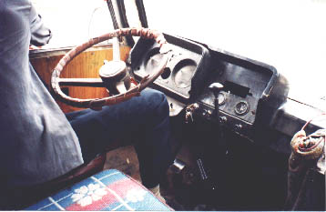
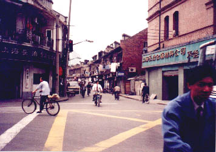
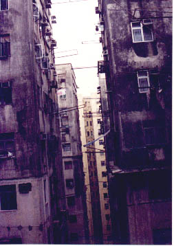

68 hour road trip 68 hour road trip
We had a hard time in front of us, and we were happy about it. The time in China had made us appreciate hardship. When every day is boot-camp test day, the best way to deal with it is to look at it with humor and eventually you find yourself actively making life as challenging as possible.
The floods had been a hassle that year in China, the old Yangzi river had been all over the valleys several times and the rains just kept falling. We had to take a train to Canton in order to make it to Hong Kong for the time of our appointed flight back home, which was due in less than a week.
For two days we waited for the latest flood to clear out and the railroads to be repaired, when this grew less and less likely and our time was rapidly running out we decided to chance on a busride instead. We had to take the trip in two legs, the first one from Kunming to Nanning and then continue on from Nanning to Canton on another bus. According to the guidebook the trip to Nanning could take as much as 30 hours and most people avoided taking this route because of that. We were pretty used to long busrides by then and we thought it would be cool to take a really long busride. So we bought our tickets and climbed aboard.

As usual, the bus did not leave the station on the appointed time, it took one hour for the bouncers to scavenge enough passengers to completely fill the bus. The bus was a "sleeper" with seats/beds that were long enough for the majority of the Chinese population but surely not for us. We got places in the back end of the bus and the top beds. Unfortunately, as we soon noticed these were the worst seats possible, it shook mightily when the bus raced forth at breakneck speed over the unpaved roads.
We were just about to leave the suburbs of Kunming behind us as my seat collapsed when the bus hit a big bump in the road. I flew down and then up in the air, all the 50cm to the ceiling. My forehead made first contact and there was a big crack as I felt my spine giving in to the full kinetic power of the rest of my body. I lay down, sweating, trying not to panic, wondering what I should do. I didn't have much choice but to lie still and wait.
One of the last things we passed as we left the outskirts of Kunming was a run-down hospital building where some of the windows were broken and the white paint was stained and cracked, people in white clothes were milling about in the yard. I knew for sure that my decision to wait with hospitalization until Hong Kong was right. My neck didn't feel to bad, considering the blow it had taken. The only thing was that I could not move the neck too far left or right, or I would instantly be punished by a severe pain. Soon I had taken a big toll out of our ephedrine stash, which is the local prescribed cure for light colds. I figured it would keep me up for a while and I didn't want to fall unconscious in case of a concussion.
Eventually, after some 18 hours of endless transportation, we came upon a muddy road where we hit some traffic jams. From then and on, we crept forward. The heat was immense and we were heavily recycling the humid air inside the bus. My neck was getting better, but during the long eat-stops that the bus had made we had managed to spend most of our money. The bus also broke down several times. As the bus slowly rolled into Nannings shantytowns some 40h after we started out from Kunming we thought that our trials were over.

How wrong were we not! Our trials had just begun. We quickly found the ticket office and bought a ticket to Canton, and after that we had just enough money left to buy us a nice little meal at "American Fried Chicken", the only decent fast food restaurant in town, or so we thought... The hamburgers tasted of dog-meat and the cockroaches behaved like they owned the place.
My friend took a trip to the bank of China which, according to the guidebook, was supposed to take VISA cards. That was WRONG. The squirmy little clerk told him that the only bank in town that took VISA was the main office a couple of blocks south. Unfortunately we had spent most of our allotted 1h stop so we had to go on travelling with a grand total of 4$ in our pockets.
We ran to the bus station and just got on in time. The bus was not yet full, so we spent a miserable 2h until the bus eventually left. The bus was spacious and we got some good places in the middle of the bus on the lower bunks. This meant that the cigarette ashes of the smokers upstairs fell down on us, but this was no problem for us anymore. As the bus was making good pace getting out of the mazeways of the suburbs, we suddenly heard the busdriver's wife yelling in a high-pitched tone. THUMP - THUMP - THUMP - we had run over a female bicyclist at full speed!
The bus screeched to a slow halt, dragging the mashed woman with it, backed up a few meters when the police came (they happened to pass moments after the accident). After something like 10 minutes, the woman was carried into a police van and they drove away at high speed with the (seemingly) lifeless, blood-covered body. Soon there was a plethora of policemen (and policewomen) scurrying over the small bridge on which the bus now stood halted. They videotaped and drew a minute detail sketch of the scene of the accident.
We were told to leave the bus after about half an hour, and 2 hours later a new bus came to pick us up. This bus did not stop very often, but when it did, we had half an hour to rest and eat. Sometime around 4 in the morning, when my friend had been trying all possible ways of relieving his bladder (the window, plastic bags, bottles...) to no avail, we decided to ask the bus driver to stop for a pee break. He did this and we got off the bus into the darkness, where my friend soon found himself lost in the shrubbery and up to his knees in mud.
After 28 contemplative hours on the tropical road, we finally found ourselves in the outskirts of Canton. When the bus stopped right outside a banking office, we decided to chance it and get off there instead of at the busterminal.
The banking personnel were friendly but had no cash for us. There was only one place that accepted VISA, a downtown hotel. We had spent most of our money on roadside snacks, but, amazingly, we managed to scrounge enough money for the bus downtown. From the local bus station we found our way to the hotel, and the transit was swift and effective.
When we bought our tickets to HK my back started itching, I didn't think much about it at the time, but soon it had grown into a full grown Kundalini dragon that was flaring away at full power under my skin as soon as I started sweating. I had contracted a bad case of "prickly heat". On the train to HK we were, for the first time in months, the dirtiest people around.
I cannot fully describe the joy I felt at leaving China, and as the beautiful skyline approached us as the train silently made its way to the world's most beautiful city. We crashed in a no-name hotel in the Chungking Mansions, a shitty high-rise that holds 80 hostels and a bazaar at the bottom level. Still, it was the height of luxury for us.

View of Chungking Mansions, as seen from within.by Joel Westerberg